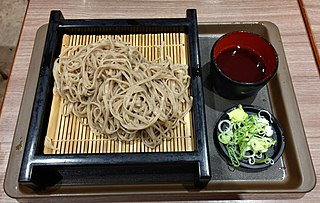

Zaru Soba

Description
refreshing soba noodles, with a mentsuyu dipping sauce and side of green onions.
Ingredients
-
Main ingredients
-
mentsuyu dipping sauce
- sake
- mirin
- soy sauce
- katsuobushi
-
toppings
Instructions
-
Make homemade mentsuyu sauce
- add a cup of sake and bring to a light boil
- add a cup mirin and continue to keep at a light boil for 2 mintues
- add a cup of soy sauce and katsuobushi flakes and simmer on low for 3 mintues
- take off heat and let cool for 9 mintues
- strain out katsuobushi flakes
- put sauce in fridge to cool while cooking the noodles
-
Cooking
- bring water to a boil
- add noodles and cook for 5 or 7 mintues
- strain noodles and rinse with cold water
- add noodles to ice water bath and let sit for 2 to 3 mintues
-
serving
- top with the greens from the green onions or serve on the side on a small tray
- pour sauce into a small dipping bowl to dip noodles into or pour sauce ontop of noodles